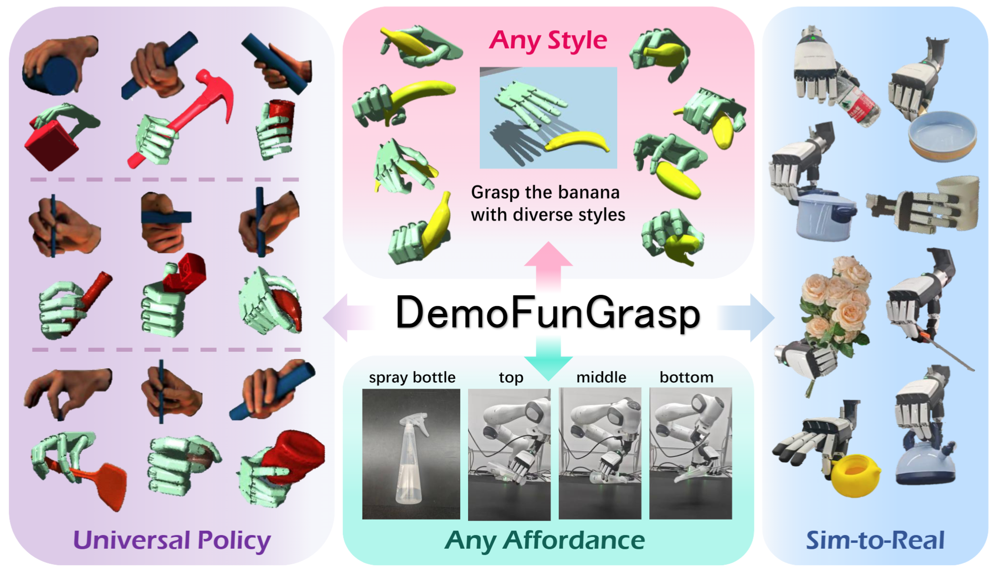
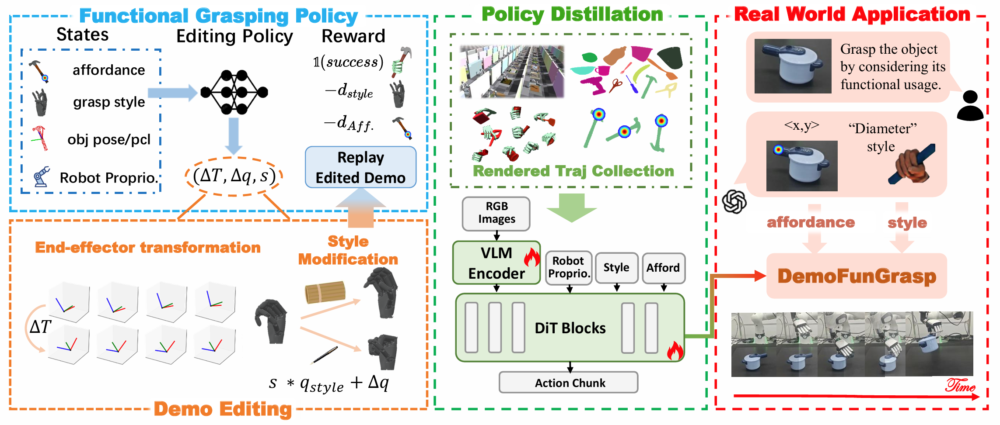
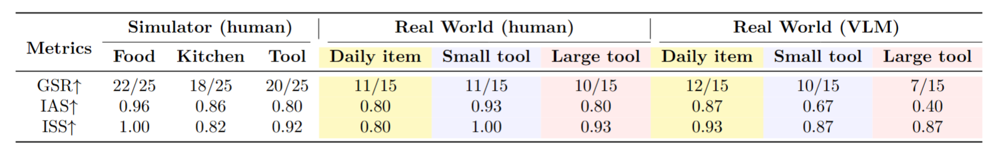

Dish soap bottle
Bouquet
Pan
Toolbox
Kettle
Yellow Teapot
Rasp
Brown Teapot
Wooden Holder
Saucepan
Watering Pitcher
Bowl
Small Bucket
Hand Sanitizer Bottle
Spray Bottle


Overview of DemoFunGrasp. The framework consists of four key components:

@article{mao2025universal,
title={Universal Dexterous Functional Grasping via Demonstration-Editing Reinforcement Learning},
author={Mao, Chuan and Yuan, Haoqi and Huang, Ziye and Xu, Chaoyi and Ma, Kai and Lu, Zongqing},
journal={arXiv preprint arXiv:2512.13380},
year={2025}
}